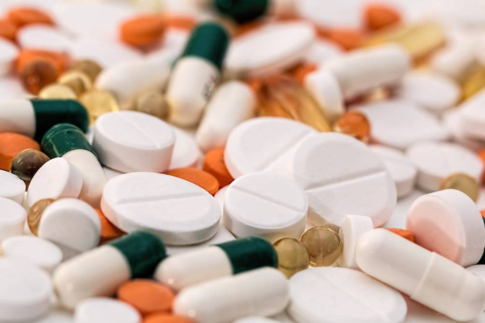
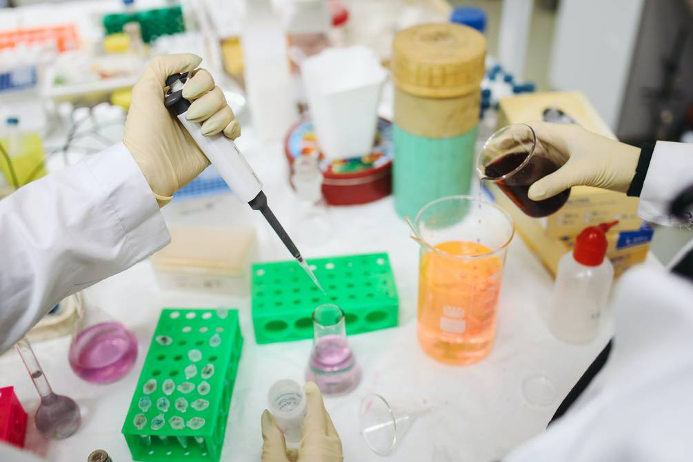

Estudio israelí comprueba que la aspirina puede reducir el riesgo de contraer COVID-19 hasta en un 29%
Las negaciones y afirmaciones con respecto al buen funcionamiento del ácido acetilsalicílico, llamado comúnmente aspirina, han sido parte de debates y opiniones adversas de parte de profesionales de la salud.Ahora, según una nueva investigación científica israelí, se comprobaría que existe una menor probabilidad de infección por COVID-19.
Se desconoce con exactitud cómo este analgésico de venta libre en algunas partes del mundo prevendría la infección por coronavirus, pero los autores creen que sus propiedades antivirales provienen de la capacidad de cambiar la forma en que el sistema inmunológico respalda al patógeno.
Los hallazgos del estudio realizado a 10.000 personas por investigadores israelíes de Leumit Health Services, Bar-Ilan University y Barzilai Medical Center se publicaron el mes pasado en la revista científica
The FEBS Journal .
Los expertos sometieron a la prueba de COVID-19 a los voluntarios entre febrero y junio de 2020 y revelaron que una tableta de aspirina (75 mg) al día condujo a un riesgo 29 por ciento menor de contraer el virus.'Esta observación del posible efecto beneficioso de dosis bajas de aspirina sobre la infección por COVID-19 es preliminar, pero parece muy prometedora', aseguró el líder de la investigación, el profesor Eli Magen del Centro Médico de Barzilai.
Según los datos relevados, 73 personas que dieron positivo estaban tomando aspirina, lo que representa uno de cada nueve de todos los casos positivos registrados.Sin embargo, el 16 por ciento de las personas (aproximadamente una de cada seis) que dieron negativo estaban tomando aspirina.La reducción del riesgo de uno a otro es de más de una cuarta parte (29 por ciento).
Cabe recalcar que las personas que tomaban aspirina tenían 14 años más; padecían sobrepeso pero no eran obesos, a diferencia del grupo que no tomaba aspirina; y tenía más probabilidades de tener diabetes, presión arterial alta y EPOC. Los investigadores también encontraron que, si bien las personas que toman aspirina tienen menos probabilidades de contraer el coronavirus, también se recuperan más rápido si contraen el virus.
El analgésico contendría propiedades antivirales, cuando el cuerpo detecta una infección viral, produce interferón I (IFN) que controla la respuesta celular al invasor.Sin embargo, los virus de ARN como el SARS-CoV-2, que causa el COVID-19, escapan al reconocimiento al evadir el IFN.
El virus hace esto al obligar al cuerpo a producir más de una sustancia química llamada prostaglandina E2 (PGE2) que inhibe el IFN y también causa la destrucción de algunos glóbulos blancos.(I)
Posted On: 2021-03-16T08:34:00
Posted By: Redacción


Content Date: 2021-03-16
Download Date: 2021-04-08
Document ID: L0C049LCP